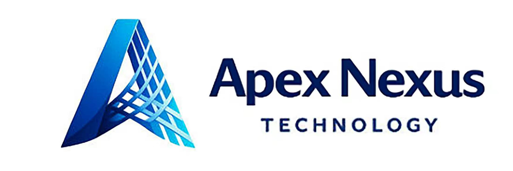
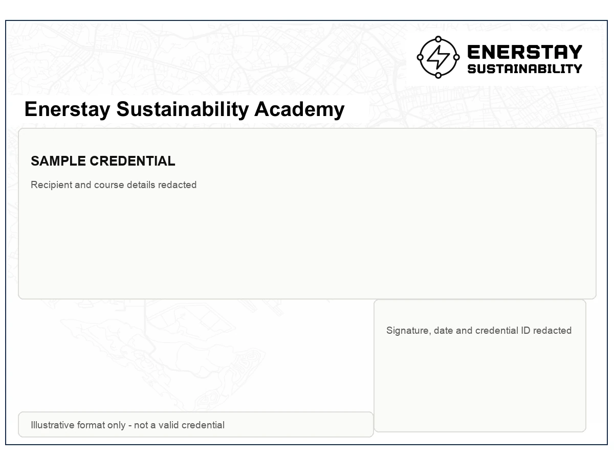

Project-first cases
Exercises are structured around real MRV, evidence, claim and industry-data questions rather than generic sustainability theory.
Enerstay Sustainability Academy
Enerstay proprietary courses are built from verification, industrial MRV, semiconductor emissions and carbon-market practice. Each module uses in-house slides, evidence worksheets, case exercises, data tables and assessment materials.
Practice System
The catalogue is designed for corporate teams, universities, industrial parks and professional associations. Course materials can be adapted by sector, language, audience seniority and assessment requirement.
Exercises are structured around real MRV, evidence, claim and industry-data questions rather than generic sustainability theory.
Participants work with boundary maps, data tables, evidence checklists and review questions similar to professional project settings.
Attendance certificates and achievement certificates can be arranged where an assessment is included and passed.
Training builds capability and evidence literacy; it is not a formal verification, validation, audit or assurance conclusion.
Ways to Learn
Compare Enerstay-owned courses, selected collaborative cohorts and the Apex Nexus digital-learning pathway before choosing a route.
Enerstay and Apex Nexus collaborate on digital course access, learner records and selected research-training workflows.
Choose an online courseSelected management, embedded-emissions data and QA/QC programmes.
View CBAM pathwayFoundation and advanced ESG learning pathways for professional cohorts.
View IASE pathwaySelected 1-2 day sustainability and carbon-management course development.
View short-course pathwayCarbon-pricing, MRV, verification and surveillance exercises for professional teams.
View CPA pathwayProprietary industrial cases, worksheets and bilingual 1-2 day cohort delivery.
Browse proprietary modulesOnline Learning

The collaboration supports online course access, learner records and selected digital research-training workflows. Course ownership, delivery and credential issuer are stated for each programme.
AI-enabled learning and digital course tools are educational infrastructure only. They do not perform VVB evidence evaluation, accredited judgement, technical review or certification decisions.
Carbon & MRV Practice
A practice course on the MRV cycle, activity data, data quality, evidence gaps, reporting errors and third-party verification evidence.
For EHS, sustainability, facilities and carbon-data teams.Covers concept design, methodology selection, baseline and additionality, project design documents, validation and verification stages.
For project, sustainability and technical staff exploring carbon projects.Uses ISO 14068-1 as the current course framework and PAS 2060 only for legacy-claim and transition context, with reduction-first logic, claim boundaries and evidence expectations.
For climate, disclosure and management teams responsible for targets and claims.A broad orientation on net-zero definitions, sector pathways, policy drivers, carbon pricing, disclosure pressure and transition risks.
For management, operations, board and student cohorts building net-zero literacy.Collaborative Programmes

Selected CBAM cohorts combine management, embedded-emissions data and QA/QC learning tracks. Programme arrangements are confirmed for each cohort.
CBAM scope, responsibility matrix, transition milestones, annual data calendar and management oversight.
Product routes, embedded-emissions data, source records, calculation controls and declaration packs.
Internal review, evidence-gap testing, corrective actions and simulated verification questions.
Applus+ collaboration applies only to specifically agreed cohorts.
Collaborative ESG Pathway
A structured progression from ESG foundations to applied professional practice for corporate and individual cohorts.
The entry professional level covers ESG foundations, stakeholder context, governance, responsible business and core sustainability concepts.
The specialist level develops applied ESG integration, risk, reporting, analysis and professional decision-making.
Cohort arrangements, eligibility, assessment and certificate-issuer roles are confirmed before enrolment.
Applied Short Courses

Selected 1-2 day formats connect carbon management, decarbonisation, sustainability reporting and operational evidence through applied exercises.
Boundaries, activity data, emission factors, reduction opportunities and management review.
ISSB/SGX-aligned disclosure logic, evidence controls and report workflow.
The institution, trainer, assessment and certificate issuer are stated in the approved cohort proposal.
Singapore Carbon Pricing Practice
A practice-led series used with certification and verification professionals to strengthen regulatory literacy, MRV evidence review and surveillance readiness.
Regulatory roles, report boundaries, accountability, verification pathways and complex-sector context.
Source streams, measurement, calculations, controls, uncertainty and evidence-chain design.
Verification planning, evidence sampling, findings, surveillance scenarios and integrated exercises.
This is an Enerstay Academy technical programme referencing public CPA requirements; it is not an NEA-issued certification.
Standards Lineage
PAS 2060:2014 was published by BSI and is now a withdrawn legacy reference. Enerstay cites BSI's public transition information for standards history only; BSI is not presented as an Academy partner.
Historical carbon-neutrality claim requirements and evidence context.
Current international framework used for reduction-first carbon-neutrality pathways and claim evidence.
BSI links are provided as public standards-history sources.
Industry & Technology Practice
A specialised module on fluorinated gases, abatement accounting, process emissions, equipment records, data quality and semiconductor MRV evidence.
For process, facilities, EHS and sustainability teams in semiconductor and advanced manufacturing.Introduces capture, utilisation and storage pathways, hard-to-abate sectors, permanence, accounting and verification considerations.
For engineering, operations, strategy and sustainability professionals.Explains offsetting, insetting, credit quality, integrity risks, value-chain action and reduction-first positioning.
For sustainability, procurement and communications teams handling carbon claims.Markets & Immersion Practice
Covers compliance and voluntary carbon markets, allowances, credits, registries, retirement, carbon pricing and integrity risks. It is not financial or investment advice.
For sustainability, finance, procurement and strategy teams.A modular immersion-style programme linking classroom ESG and carbon concepts with supply-chain, automation and industry-practice context across China and Singapore.
For corporate cohorts and student groups seeking practical cross-border exposure.International Study Programmes
Programme design combines classroom learning, industry context, university exposure and project-based sustainability exercises. Final hosts and visit sites are confirmed for each cohort.
ESG, green industry and Singapore sustainability exposure for selected cohorts connected with the College of Polymer Science and Engineering.
Wuhan · SGA signed Singapore university and sustainability immersion collaboration for school cohorts.
SingaporeLocal education-programme coordination, learner support and study-visit logistics for selected cohorts.
Professional Community Learning

Enerstay and BWG Academy are preparing sustainability learning for selected professional communities, with programme scope and delivery roles confirmed before launch.
WSH Professional Community
Two distinct relationships are shown: documented SISO mini-training delivery and team professional membership with recurring Bedok Safety Group knowledge exchange.
 Training collaboration record
Training collaboration recordSelected SISO mini-training sessions delivered for workplace-safety and health professional development.
Open SISO Professional membership
Professional membershipTeam professional membership and recurring participation in WSH seminars and practitioner knowledge sharing.
View WSH Council bulletinCredential Example
The sample shows the intended visual and control fields only. Course name, participant identity, dates, signatures and credential number are intentionally hidden.

Custom Cohorts
Enerstay can combine modules for corporate teams, universities, industrial parks and associations. Cohorts can be delivered in English, Mandarin or bilingual format, with case exercises and assessment options.